人活一口气，气虚百病生
气虚是万病之源，它会导致支气管炎、哮喘、萎缩性胃炎、胃下垂、子宫下垂、脱肛、心肌缺血、骨质疏松、记忆力减退、浑身无力、脏腑功能低下等。
先天不足、长期饮食失调、生活不规律、精神压力大、久病不愈、疲劳过度、大病一场、刚做完手术、年老体弱都会导致气虚，很多人单纯补血没有效果，就是因为气虚导致的，所以补血也得从补气开始。
冠心病、脑梗塞、脑缺血、老年性痴呆、慢阻肺都属于气虚血瘀的严重状态，但是在治疗时，往往只重视了活血化瘀，忽略了补气的重要性。
《皇帝内经》认为：“气”决定健康生死：正气内存，邪不可干，邪之所凑，其气必虚；
气能生血、气壮则康，气衰则弱，气散则死；气行血行，气虚血虚，气滞血滞。
气血失调，高血压、糖尿病、心脑血管病、咳喘病、胃病、前列腺病等慢性病都会自然而来；
十人九虚,自测一下，你需要补气啦
| # | 症状 |
|---|---|
| 肺气虚 | 咳嗽气喘、痰多、自汗盗汗、手脚冰凉、水肿、易感冒、鼻炎、肺炎、咽炎 |
| 肾气虚 | 腰膝酸软、疲倦乏力、头晕目眩、失眠健忘、尿急尿频，脱发白发、耳聋耳鸣、遗精早泄、前列腺炎、肾炎、白带清稀、月经淋漓 |
| 脾气虚 | 形体消瘦或虚胖、饮食减少，胃胀、胃酸、胃疼，倦怠乏力、大便溏薄，面色萎黄、胃溃疡、肠炎 |
| 心气虚 | 心悸、气短多汗、心慌胸闷、神疲体倦、心肌缺血、血糖高、血压高、血脂高、心肌缺血、心血管病 |
| 肝气虚 | 抑郁焦躁、面色青黄、口燥咽干、眼干眼花、萎黄、视物模糊、眼花、手脚麻木、胁下作痛、脑缺血、脑血管病、白内障 |
这座道教名山常年干旱寒冷
为啥百岁老人如此众多？
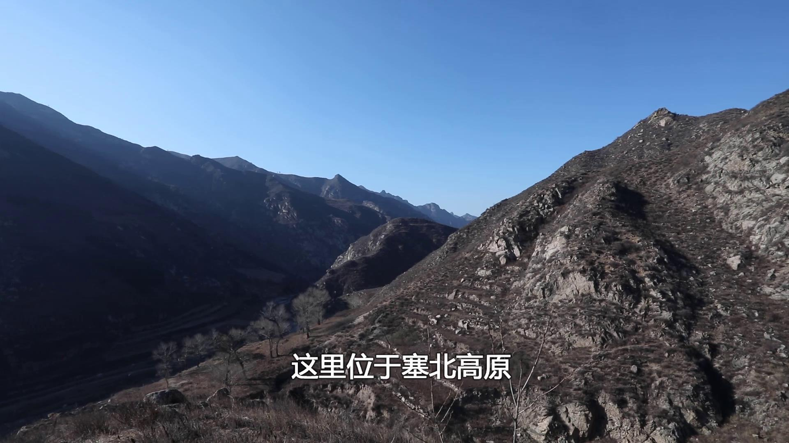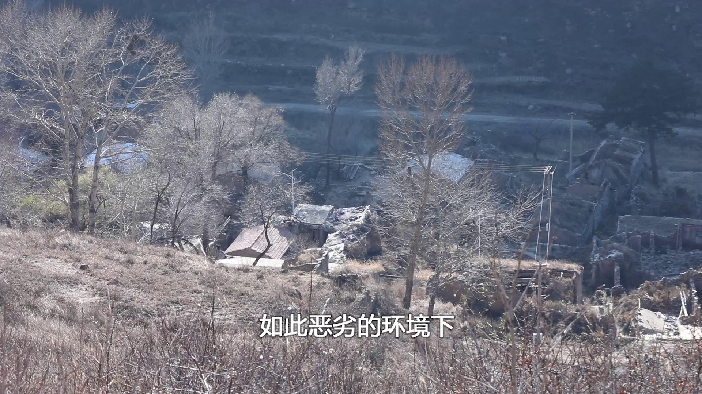
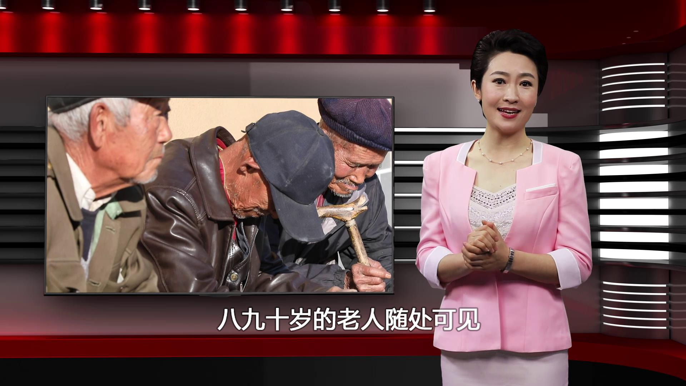
北岳恒山位于塞北高原、海拔2300米，这里常年干旱寒冷、不宜蔬菜、主粮生长，八、九十岁的老人却到处可见。
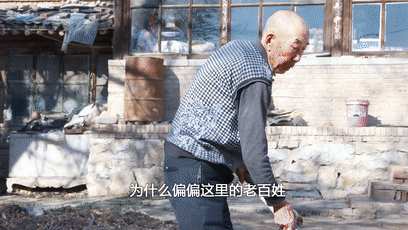
无论男女，八、九十岁身体硬朗、不生病，下地干活、挑水、砍柴、种地都不在话下。
宁可三天不吃肉
不可一日无芪汤

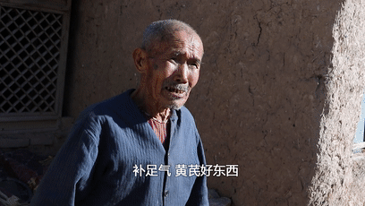
野生恒山黄芪是天然补品，当地人煲粥、炖汤、泡酒、泡茶每天都离不开，吃黄芪补气血、长寿、不生病是大家的共识。
野生恒山黄芪为天下黄芪之宗
因稀有名贵被医家称为正北芪
——补气养血，降血压、降血糖、防治心脑血管病、保护胃黏膜、保护肝肾、抗氧化、抗衰老效果惊人！
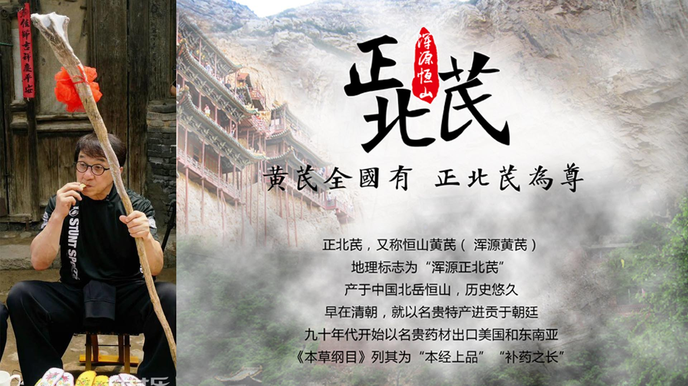国际动作影星成龙直夸恒山黄芪好（正北芪）
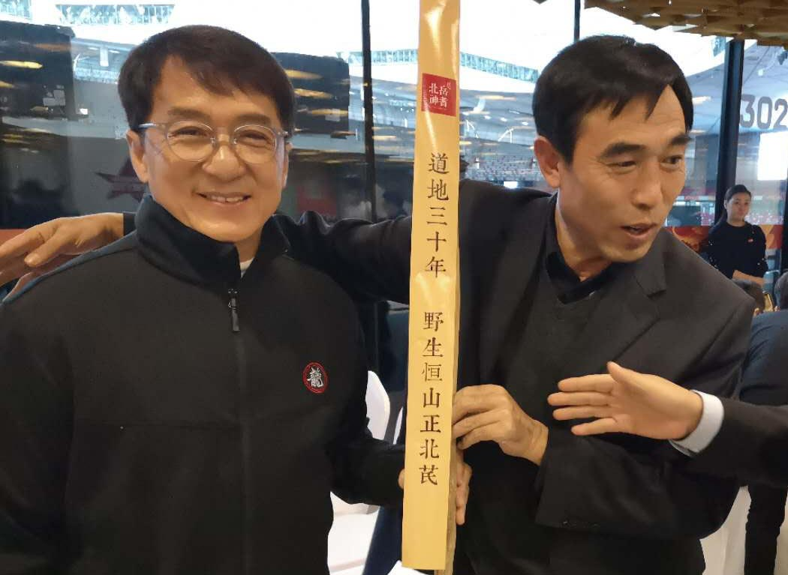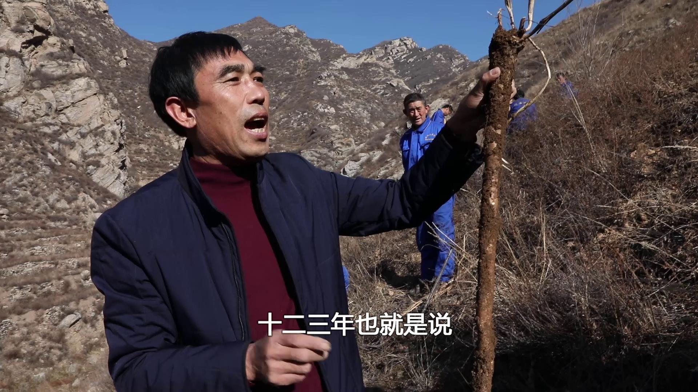
北岳神耆野生恒山黄芪基地负责人赵贵富
十药八芪，黄芪是一味补气行血的大药，《神农本草》列为“上品”、《本草纲目》称为“补药之长”，《本草求真》推为“补气诸药之最”，可补五脏六腑之气，行十二经络气血！
2015年12月10日央视CCTV4专题报道：恒山黄芪除了补气固表，还具有利尿、托毒，排脓的功效，在抗疲劳、降压、保肝、调节血糖方面也有很大疗效！
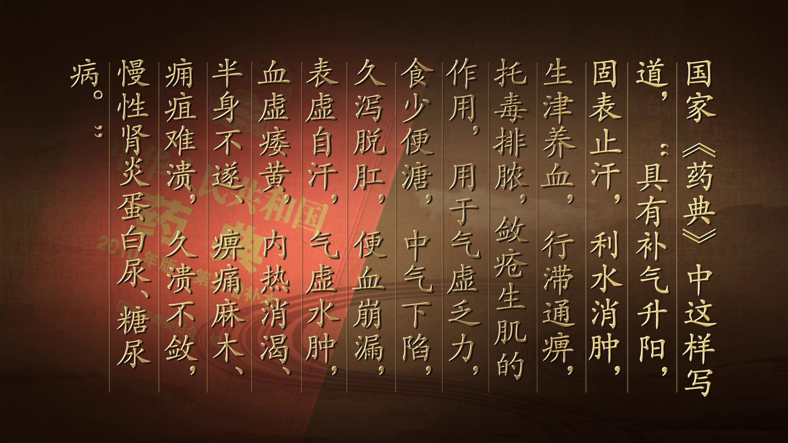野生恒山黄芪的功效明确载入《国家药典》
CCTV4《健康故事》：两位长寿国医大师朱良春、李济仁煲粥、泡茶都离不开正北芪
宁用恒山北芪一两
不用平地杂芪一斤
此为历代名医用芪之道，恒山黄芪是国家三级保护植物、国家地理标志保护产品，国家地理标志保护商标，补气效果，普通黄芪历来不可相！
央视CCTV4《名贵中药正北芪》专题片实地专访
北岳恒山所在地《浑源县志》记载，1500多年前的北魏时期，就已在恒山采黄芪入药。
宋朝以后，恒山黄芪被历代名医公认为正宗的道地黄芪，称为“正北芪”，清代则作为朝廷贡品。
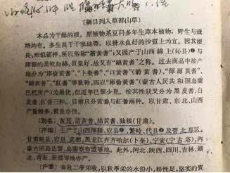民国时《药物出产辨》、《药物学备考》等中医名著，都将恒山正北芪视为“天下黄芪之正宗”，称恒山黄芪为“上等北芪，产量稀，立等见效”。
美国科学家发现神秘抗衰老物质
来自中国恒山野生黄芪
——能激活细胞端粒酶、有望让人类“返老还童”!
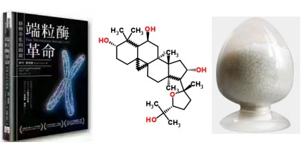2008年，英国《每日邮报》报道，美国加州大学教授埃弗罗斯，从来自中国恒山野生的黄芪甲苷中，发现了一种神奇的抗衰老物质环黄芪醇，这种天然抗衰老物质，能激活细胞端粒酶、增强细胞活力，有望让人类“返老还童”！
央视报道：
野生恒山黄芪按根卖，每根上千块！
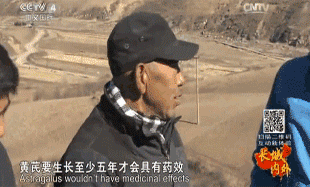
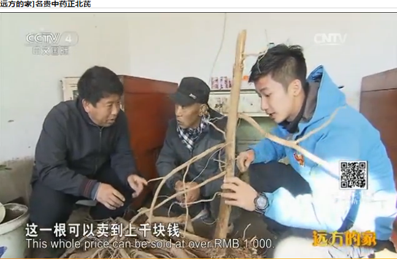
恒山黄芪含100多种生物活性成分
种类和含量远高于普通平地黄芪
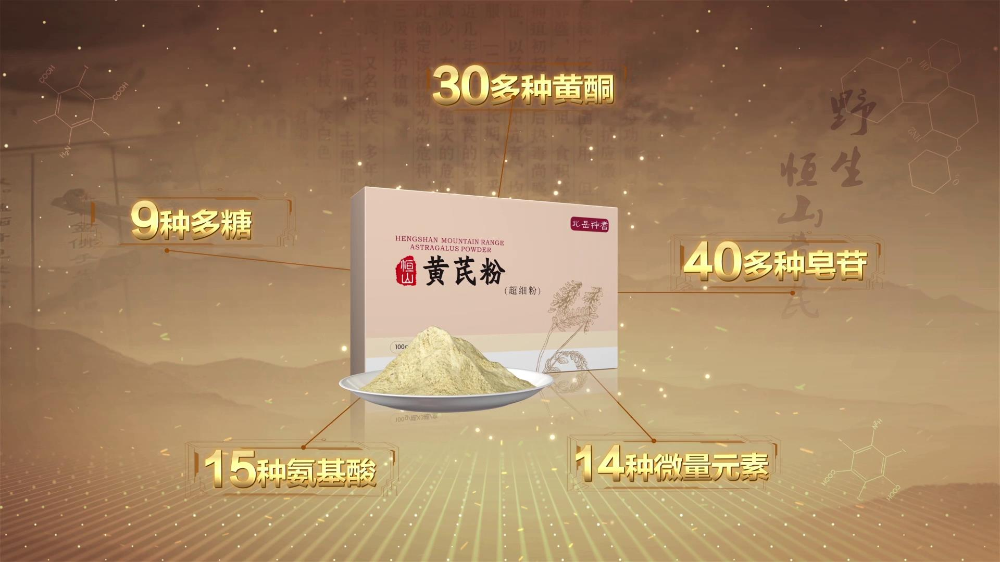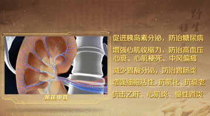 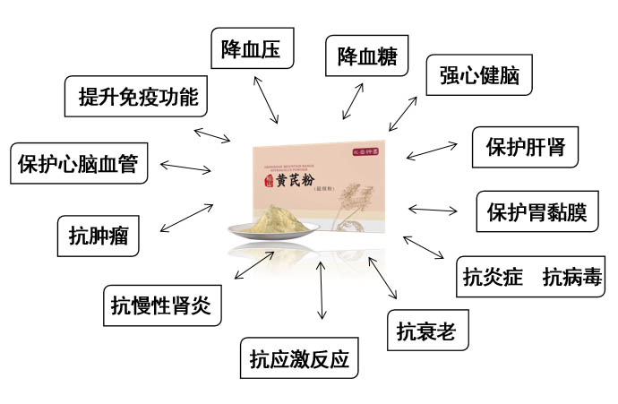
现代药理学研究发现，野生恒山黄芪含有100多种生物活性成分，包括40多种皂苷、30多种黄酮、9种多糖、15种氨基酸、14种微量元素，各种有效成分既各司其职，又协同作战。
野生恒山黄芪主要功效成份
含量是国家标准的2.6~12倍
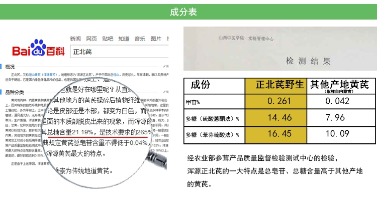
中国中医科学院检测显示野生恒山黄芪中:黄芪甲苷含量是国家药典标准的6倍,多糖含量是国家药典标准的12倍,毛蕊异黄酮是国家药典标准的2.6倍,硒含量是普通黄芪的9倍
百度搜索上万份临床观察报告显示：恒山黄芪已涉及100多种疾病的预防和治疗
野生恒山黄芪生长期八年以上
普通平地种植黄芪两三年就挖
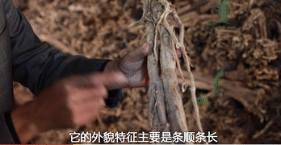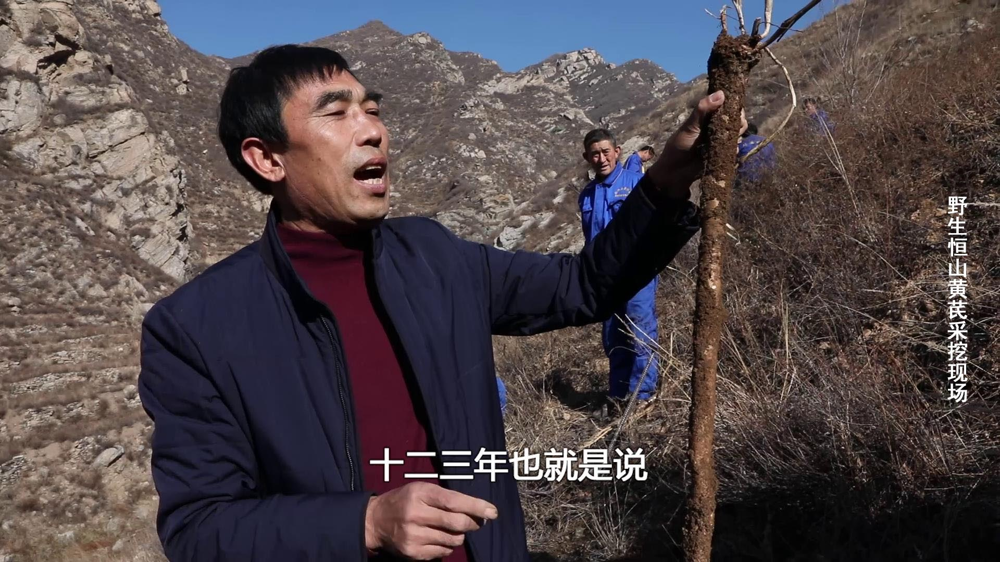
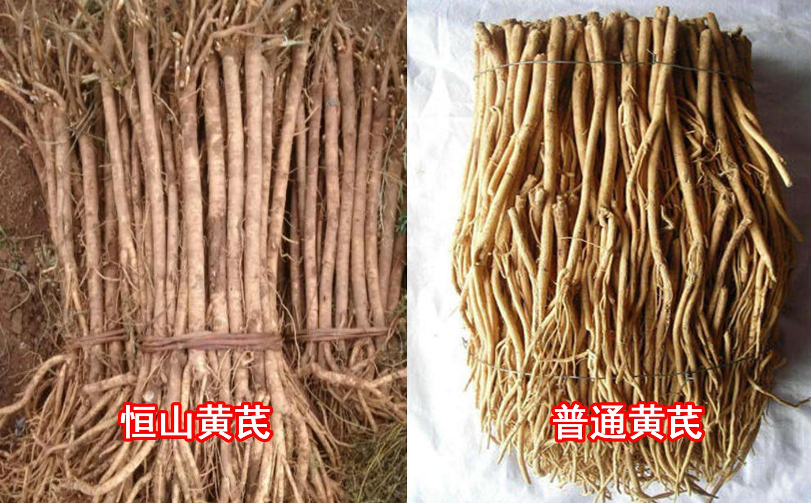
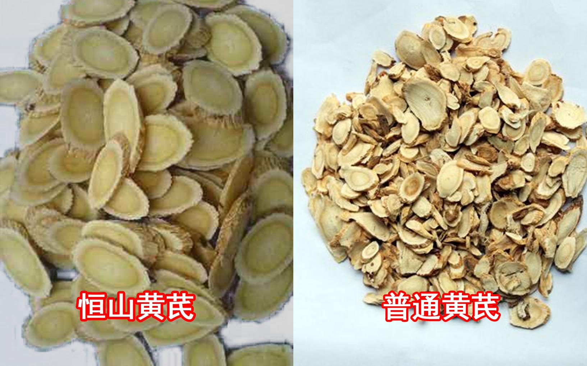
正宗的野生恒山正北芪，条长而顺，皮光色亮，粉性大，空心小，切开之后，切面就会呈现皮部黄白色,木部淡黄色,有放射状纹理,像菊花心一样，被香港、东南亚一带的药行称为“金盏银盘菊花心”。
老天爷划定的地方
滋补药用价值远超全球任何产区
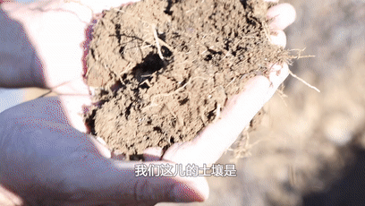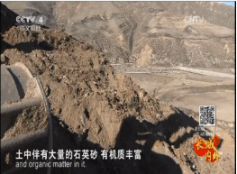
北岳恒山绝无仅有的生态条件，决定了野生恒山黄芪药用滋补价值，这也是野生恒山黄芪产量稀少，被认定为国家三级保护植物的原因。
一是寒冷的气候和巨大温差：8年以上漫长的生长周期，有利于黄芪皂苷、多糖、黄酮、硒等药用和营养成份的转化和积累：野生恒山正北芪生长在北岳恒山海拔1200米到1800米草甸区的阳坡地带，常年平均气温6.2度，平均昼夜温差16度，由于气候寒冷干旱，野生正北芪生长缓慢，8年以上才符合采挖标准，漫长的生长周期，有利于黄芪皂苷、黄芪多糖、黄芪黄酮等药用成分和营养物质的转化和积累；
二是高养分花岗片麻岩质粗骨性砂质土壤：含有丰富的微量元素和有机质、利于根部吸收，恒山黄芪甲苷、黄芪多糖、黄酮、硒含量远高于普通黄芪。山西农科院土壤研究所分析结果显示：北岳恒山为花岗片麻岩质粗骨性砂质土壤，含有丰富的有机质和微量元素，有利于根系下扎长粗和吸收养分，土壤中有机质、氮、磷、钾、硒等微量元素含量全部为1级，这是野生恒山正北芪黄芪甲苷、黄芪多糖、硒含量高于普通黄芪4、5倍的原因。
三是无污染的空气：北岳恒山空气清洁度全年1级，光照强、无污染，保证了野生恒山正北芪纯天然、无残留的品质。
野生恒山黄芪产量少、需求大
能造福的人太少
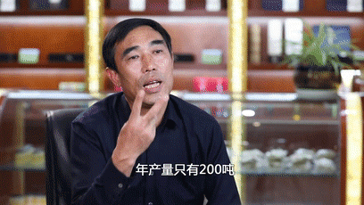
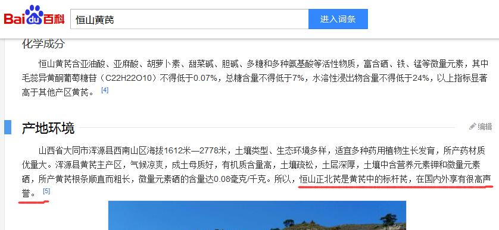
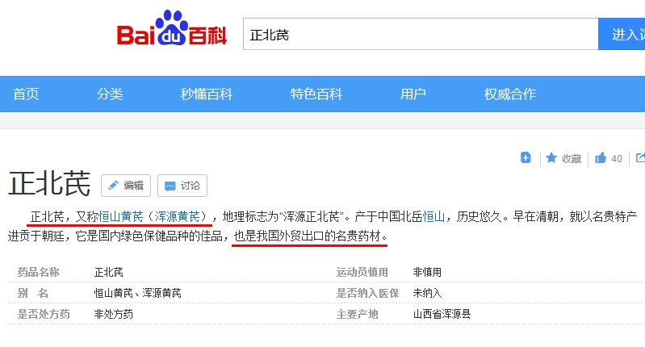
全国黄芪需求量每年6.8万吨，野生恒山黄芪每年只有200来吨，占全国需求量的0.0012%！其中120吨一直出口美、日、韩、东南亚及港台地区，20多吨用于药厂临床用药，剩下只有80来吨，能用到大众身上的少之又少！！
将野生恒山黄芪制成超细粉
有效成份全面吸收不浪费
活性高、吸收快、受益人群成倍扩大
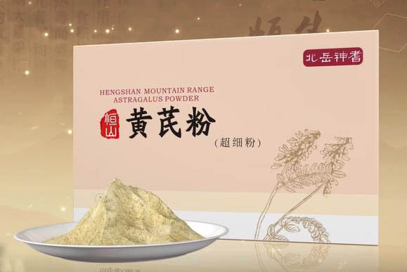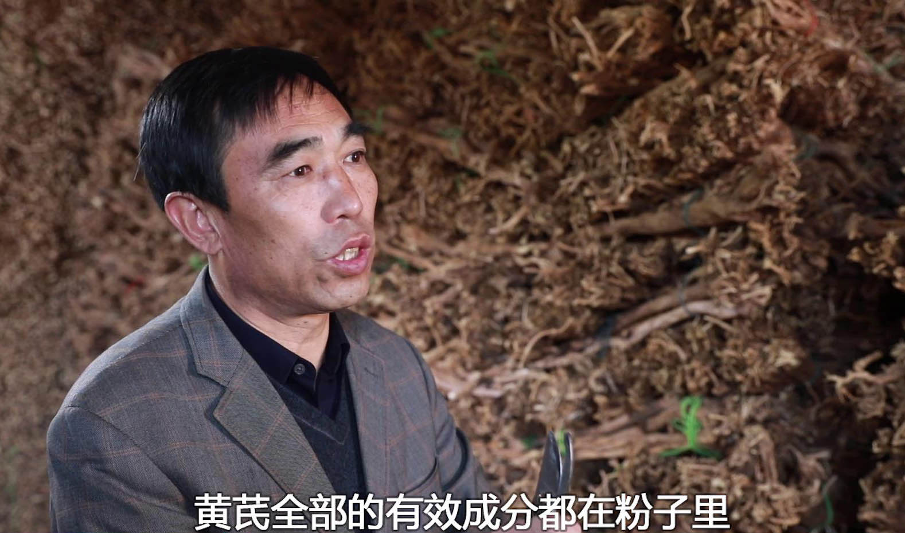
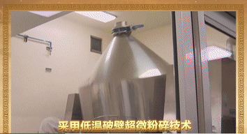
野生恒山黄芪超细粉，采用低温超微破壁粉碎技术，能保持有效生物活性成分，吸收见效快，保证100%全面吸收，功效增强，扩大受益人群30倍以上。
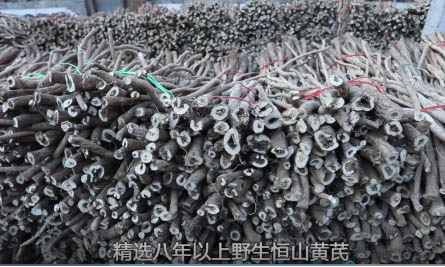
从采挖、筛选、加工、粉碎、出品，每个生产环节北岳神耆野生恒山黄芪粉严格按照国家GMP标准把关生产
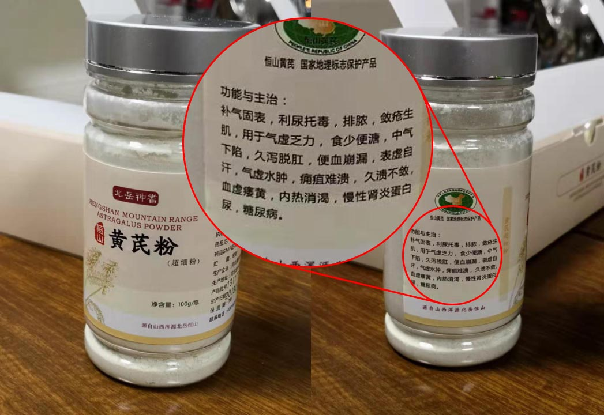北岳神耆牌恒山黄芪超细粉，经药监局批准备案，功能主治严格执行国家药典标准
北岳神耆牌恒山黄芪超细粉
国家保护 院士推荐 誉满全球
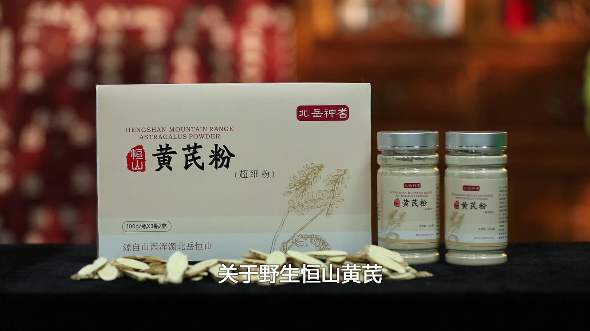
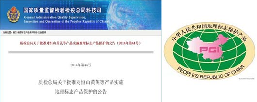
国家质监局地理标志保护产品
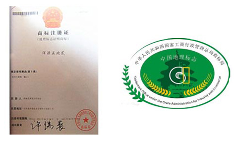国家商标局地理标证明商标
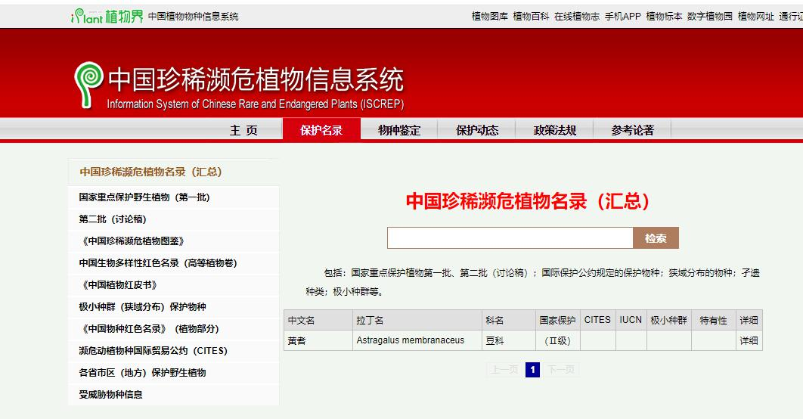中国珍惜濒危植物，国家三级保护植物
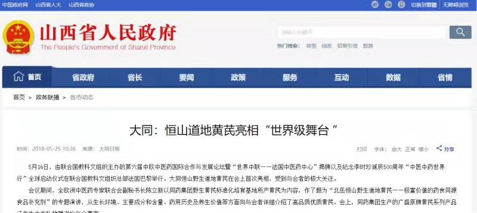恒山黄芪在联合国教科文组织国际合作与发展论坛备受关注
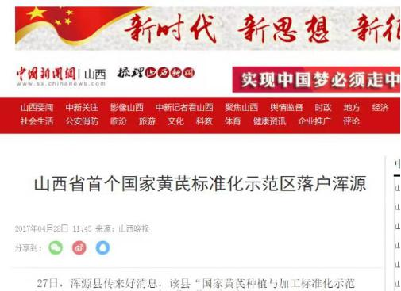恒山黄芪基地成为首个国家黄芪标准示范基地
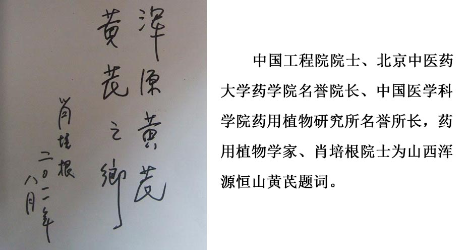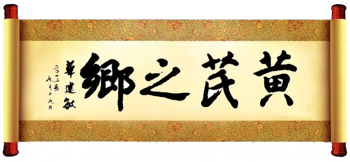
原中国红十字会会长华建敏为中国黄芪之乡浑源题词
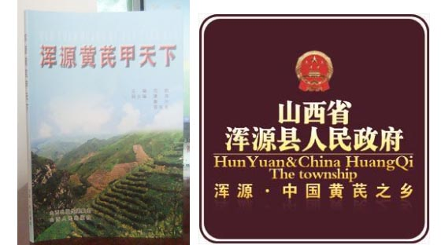北岳恒山所在地山西浑源，被认定为中国黄芪之乡
北岳神耆恒山黄芪基地公告
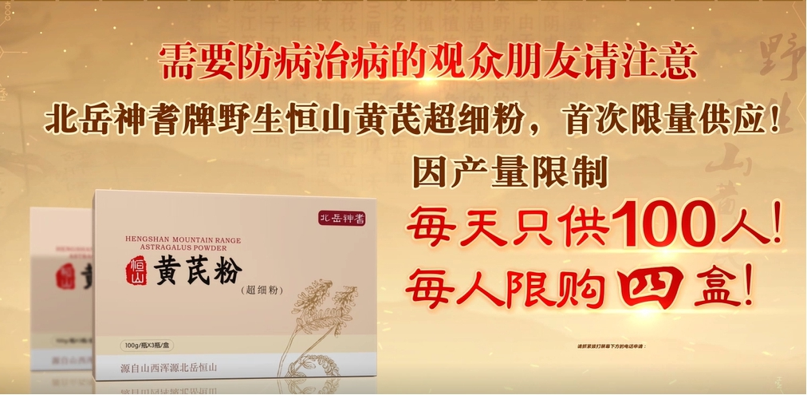马上申请，留下电话，客服会主动和您沟通

添加微信：
阅读1.6万
好看127
.jpg)
曾经功成
395
恒山黄芪粉终于能买到啦，传说中的正北芪啊，好东西，有病治病没病防病！果断收藏！已经推荐给气血虚、糖尿病、高血压、心脑血管病的亲朋好友看了。
|作者
您识货，这是出口恒山黄芪首次向国内公开限量供应，请认准北岳神耆牌！
.jpg)
风花雪月
334
黄芪补气血，养颜，我每天用，第一次看到北岳恒山黄芪这么详细的介绍，太震撼了，果断添加官方微信 ，先换瓶试试！
|作者
一看就是个果断的人儿！
.jpg)
雁北候鸟
456
小编，虽然离开家乡很久了，但我是土生土长恒山脚下的浑源人，补充一下，恒山老百姓虽然生活条件差但普遍长寿，除了常吃黄芪，跟常吃粗粮、空气好也有关。顺便说一声，我爷爷今年也90多岁了，常用黄芪炖羊肉，除了腿不太利索，没啥病，欢迎过来采访，感谢宣传我们恒山黄芪。
|作者
老乡，谢谢！
.jpg)
一念之间
334
我父亲在浑源当过知青，恒山黄芪泡水喝了半辈子，虽然年轻时在雁北农村糟了不少罪，但也托了恒山黄芪的福，70多了一点毛病也没有。恒山黄芪是国家出口创汇中药，很难弄到正宗的，恒山黄芪粉还是第一次看到，这个不浪费、好吸收，给你们点赞，我已经下单，要了4盒！
|作者
货已发出，请注意查收，祝老爷子健康快乐！
.jpg)
磨磨蹭蹭
246
我爷爷是个老中医，对道地药材的药性要求近乎挑剔，在我们这边药房碰不到正北芪，方子都不想给病人开了，出口创汇有那么重要么？
|作者
可以理解老人的心情，恒山黄芪解放前就已经销往香港、东南亚一带了，日本人1937年就曾在浑源开过黄芪加工厂，改革开放后，一直出口创汇，这个小编也无可奈何。
.jpg)
财富通道
142
收到北岳神耆牌恒山黄芪了，老爸糖尿病，说在电视上看到过，高兴坏了，小编良心大大滴，瓶子上功能主治清清楚楚，老两口都吃开了，上个图
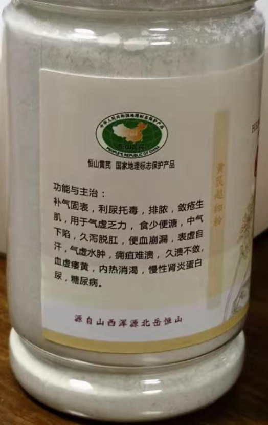|作者
有病治病，没病防病，有国家批文，全家都能放心吃！
.jpg)
蝶恋花
346
恒山黄芪粉看起来很厉害，我在电视上也看过，大夫说我气血虚，想试试，千万别让我失望
|作者
使用后欢迎你随时反馈效果，事实来说话。
.jpg)
百年之后
521
为啥我加微信北岳神耆恒山黄芪的微信 还没通过。。。。
|作者
可能太忙了吧，再等等，看到了会通过的。
.jpg)
世界之大
116
这个北岳神耆牌恒山黄芪粉真有呢么多功效？真有那么管用？
|那是一片大海回复
凭良心评价一下，我本来是买来配合调气血、稳血压的，结果吃了5天，便秘就改善了！现在用了一个多月，走路气短，尿频尿急也有改善，重点是原来吃降压药血压忽高忽低，现在很稳定，还减了一半用量，恒山黄芪真实好东西！
.jpg)
我是老王
249
我刚做了手术，坐在沙发上都出虚汗，腿软，不想吃饭，每天有气无力，每天两、三勺，吃了半个多月，首先不出汗了，身上力气大，自己都能动手做饭了。
.jpg)
风雨人生
189
我专门百度查了一下，恒山黄芪，正北芪、浑源黄芪，百度一下就出来了
|作者
小编我难道还敢造假？！
.jpg)
人生二维码
316
总是有人说好有人说不好吧，恒山黄芪几千年的名贵中药了，已经加了微信了，人家产量太少，想多买都不给的！
.jpg)
成功之父
406
楼上说的对，我是肾病，尿蛋白高，一高就吃恒山黄芪粉，量稍微大点的话，一天就降下去了，后来仔细研究，十药八芪，几乎每副中药都用到黄芪，是由道理的！
|作者
丽珠药业生产的参芪扶正液，用的也是恒山黄芪，用于肿瘤的！黄芪功效很多！
.jpg)
Ferdinand
377
我只想说老祖宗真不简单，我是胃溃疡，现在好多了，恒山黄芪能保护胃黏膜效果特别好！
|作者
先恭喜你了，另外提醒你一点，如果你坚持服用，还会有意外收获！
.jpg)
明天会更好
122
老实说我是个病秧子，每天无精打采的，我从小就生病多，人瘦的全是骨头，看西医说没事，看中医说我是典型气虚体质，年轻时也不太当回事，快四十了，看了这个介绍，就买了四盒北岳神耆恒山黄芪粉，现在用了两个月了，明显的感受，就是浑身有力气，有中医说的“升阳”的感觉，春节时，老婆感冒了，我都没有，哈哈哈，太高兴了！
.jpg)
嘻嘻哈哈
330
用了不到20天，晚上睡觉好多了，昨天居然一觉天亮，能遇到北岳神耆是我老汉的福分！
.jpg)
发光的金子
316
我是老糖友，双腿浮肿，下不去，和这个恒山黄芪粉，顶事儿，三个来月就不肿了，黄芪还有预防糖尿病并发症的功用，坚持，与病友共勉！
|作者
利水消肿效果，没的说，为您高兴！
.jpg)
太阳
844
看大家评论都挺不错，我也凑一句，刚用了几周，虚汗停了，原来动不动就冒汗！
.jpg)
雷诺
701
这个到底靠谱不啊！谁来告诉我，回家带点这个给我爸爸行不行啊？给个建议啊。
|威廉王子
恒山黄芪已经有上千年历史了，这玩意儿的功效老祖宗早就验证过了，我刚生了娃，产后虚弱，管用
.jpg)
给自己一抹暖阳
203
恒山黄芪粉具有敛疮生肌的功效，我叔叔，40多岁了，锻炼腹肌肉，就吃这个，说是长肌肉，长肌肉！
.jpg)
!!!!
301
报告，我的恒山黄芪粉让我不拉稀了，以前胖，便便就没有整形的时候，稀稀拉拉的，真心话。
.jpg)
复合人生
310
我关注了北岳神耆恒山黄芪粉好久了，看到你们都有或多或少的变化了，我准备出手啦啦啦。
.jpg)
终结者
189
刚看到帖子还以为是假的，忍不住想吐槽，查了下，没错的，是真的，厉害，希望真的有效，我相信的是广大网友雪亮的眼睛
.jpg)
大牛
219
试过好多方法了，都不管用，纠结，算了先试试吧
.jpg)
百事顺意
224
划重点，本姑娘看中的就是美艳美颜，补气养血，气色好，比化妆品强太多了